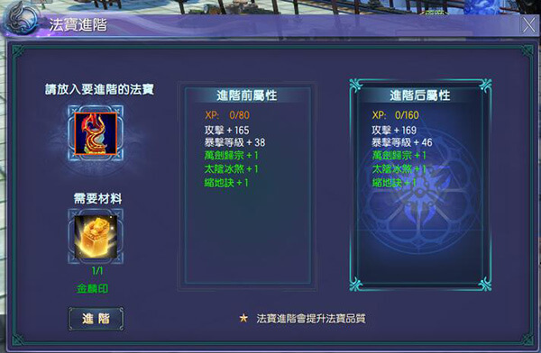
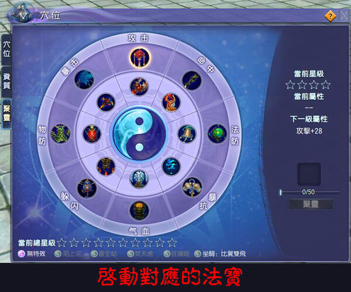
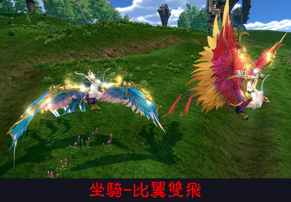

想要進行法寶進階，可透過橙色法寶+金麟印=金色法寶，提升法寶的數值。
進階條件：玩家等級大於等於75級
消耗道具：金麟印
進階規則
1、只有橙色法寶可以進階，進階為金色法寶
2、每次進階消耗1個金麟印
3、進階後的法寶位置類型不變（無影針進階後還是無影針）
4、法寶精煉經驗不變（金色法寶精煉時經驗值較高，仙友原本的星等可能下降）
5、法寶附加技能（綠字）等級不變
6、白字數值根據法寶範本重新生成
進階流程：
找到NPC朱妙歌，選擇法寶進階，放入要進階的法寶及材料，點擊進階即可。
金麟印取得管道：
1.冰火秘藏BOSS掉落，需roll點,該掉落的金麟印可以上架珍品拍賣行,不能面對面交易
2.在朱妙歌處可用5個金麟裂章兌換金麟印(綁定)，金麟裂章可透過戰場首勝任
務必得1個（綁定）
其他：
金麟印可以在朱妙歌處兌換2個紫色靈寶原石。
玩家等級大於等於75級之後開放「法寶聚靈」，首次通過法寶進階可獲得金色法寶，用金色法寶可以啟動一個屬性，如以下介面中所示：

培養法寶：
初始法寶星級為0級，使用法寶培養道具（聚靈符）可進行培養，培養法寶可以提升對應的屬性數值，等級分為0-8級，其中0級無屬性。
培養方式與寵物技能欄擴充類似，機率直接升級，失敗後增加幸運值，滿值後下一次培養必定成功。
當玩家總的法寶星級到達一定程度時，可以解鎖自身周圍的特效，目前有4個位置，有四個特效及坐騎，分別是：陌上花、蒼生劫、焚天虎和狂瀾翅及比翼雙飛（坐騎）特效每40-120秒播放一次。
培養道具來源：
通過競技場榮譽：100點兌換5個1級聚靈符（綁定），該道具每週可用10次（兌換次數無限制，但只能開出50個）
75級後可在朱妙歌處接到兩個每週任務：分別要求擊殺青丘平叛的任意BOSS/魔界追魂、冰火秘藏的任意BOSS可獲得不同數量的聚靈符。
